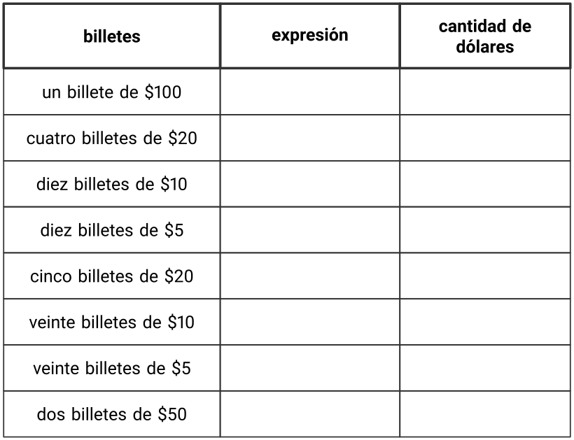

Soluciones Actividades de cierre
Seccin A -Qu es la divisin?
Leccin 1 -Cuntos grupos?
Calentamiento
Calentamiento 1. Cuntos ves: Manzanas.
Cuntas ves?
Cmo lo sabes?, qu ves?
Actividad 1
Actividad 2. Cuntas manzanas?
Resuelve cada problema. Muestra cmo pensaste. Usa objetos, un dibujo o un diagrama.
Si 24 manzanas se ponen en cajas y en cada caja se ponen 8 manzanas, cuntas cajas hay?
Si 42 manzanas se ponen en cajas y en cada caja se ponen 6 manzanas, cuntas cajas hay?
Si 32 manzanas se ponen en cajas y en cada caja se ponen 4 manzanas, cuntas cajas hay?
Actividad 2
Actividad 3. Recorrido por el saln: Manzanas en cajas.
Con tu compaero, ve a ver los psteres alrededor del saln. Discute con tu compaero en qu se parecen y en qu se diferencian las ideas que se muestran en los psteres.
Reflexiona sobre lo que viste. Escribe una cosa en la que se parecen y una cosa en la que se diferencian las ideas que se muestran en los psteres.
Leccin 2 -Cuntos hay en cada grupo?
Calentamiento
Calentamiento 5. Observa y pregntate: Ms manzanas.
Qu observas?
Qu te preguntas?

Actividad 1
Actividad 6. Cuntas manzanas?
Resuelve cada problema. Muestra cmo pensaste. Usa objetos, un dibujo o un diagrama.
Si 20 manzanas se empacan en 4 cajas y en cada caja hay el mismo nmero de manzanas, cuntas manzanas hay en cada caja?
Si 36 manzanas se empacan en 6 cajas y en cada caja hay el mismo nmero de manzanas, cuntas manzanas hay en cada caja?
Si 45 manzanas se empacan en 9 cajas y en cada caja hay el mismo nmero de manzanas, cuntas manzanas hay en cada caja?
Actividad 2
Actividad 7. Recorrido por el saln.
Con tu compaero, ve a ver los psteres alrededor del saln. Discute con tu compaero en qu se parecen y en qu se diferencian las ideas que se muestran en los psteres.
Actividad 3
Actividad 8. Todas las manzanas.
Si 24 manzanas se ponen en cajas y en cada caja se ponen 8 manzanas, cuntas cajas hay?
Si 20 manzanas se empacan en 4 cajas y cada caja tiene el mismo nmero de manzanas, cuntas manzanas hay en cada caja?
Discute con tu compaero:
Leccin 3 -Dibujos de situaciones de divisin
Calentamiento
Calentamiento 10. Conversacin numrica: Cuanto ms cambien las cosas....
Encuentra mentalmente el valor de cada expresin.
\(\displaystyle 120 + 120\)
\(\displaystyle 121 + 119\)
\(\displaystyle 125 + 115\)
\(\displaystyle 129 + 111\)
Actividad 1
Actividad 11. Grupos de estudiantes.
Qu observaste acerca de cmo los estudiantes se organizaron en grupos de 2?
Qu observaste acerca de cmo los estudiantes se organizaron en 2 grupos?
Actividad 2
Actividad 12. Los lpices de colores de Elena.
Elena tiene 12 lpices de colores. Ella tiene 2 cajas y quiere poner el mismo nmero de lpices en cada caja. Cuntos lpices irn en cada caja?
Cul dibujo corresponde a la situacin? Explica tu razonamiento.
B

Actividad 3
Actividad 13. Cul dibujo corresponde?
Asocia cada situacin con un dibujo. Preprate para explicar tu razonamiento.
Mai tiene 8 marcadores y varias cajas. Ella pone 4 marcadores en cada caja. Cuntas cajas con marcadores hay?
Kiran tiene 20 bolgrafos y varias mesas. l pone 2 bolgrafos en cada mesa. En cuntas mesas puede poner bolgrafos?
Lin tiene 8 lpices de colores. Ella los pone en 2 bolsas. En cada bolsa pone el mismo nmero de lpices de colores. Cuntos lpices de colores habr en cada bolsa?
Priya tiene 15 crayones y varios pupitres. Ella pone 5 crayones en cada pupitre. Cuntos pupitres tendrn crayones?
Noah tiene 20 lpices y 10 cajas. l pone el mismo nmero de lpices en cada caja. Cuntos lpices habr en cada caja?
Jada tiene 15 marcadores y 3 mesas. Ella pone el mismo nmero de marcadores en cada mesa. Cuntos marcadores habr en cada mesa?
A.

B.

C.
Leccin 4 -Interpretemos expresiones de divisin
Calentamiento
Calentamiento 15. Conversacin numrica: Ms o menos?
Encuentra mentalmente el valor de cada expresin.
\(\displaystyle 500 - 475\)
\(\displaystyle 504 - 475\)
\(\displaystyle 512 - 475\)
\(\displaystyle 512 - 449\)
Actividad 1
Actividad 16. Trompos.
Los trompos son populares en todo el mundo. Estos son trompos de diferentes culturas.
Empareja cada situacin sobre trompos con una expresin que pueda representarla.
1. Clare tiene una coleccin de 24 trompos de cuatro colores: negro, blanco, rojo y verde. Tiene el mismo nmero de trompos de cada color. Cuntos trompos tiene de cada color?
2. Priya y su amigo estn decorando con pintura 24 trompos de madera. Si cada persona pinta el mismo nmero de trompos, cuntos trompos pinta cada persona?
3. En una tienda tienen 24 trompos de todo el mundo exhibidos en 6 cajas. Cada caja contiene el mismo nmero de trompos. Cuntos trompos hay en cada caja?
4. Diego tiene 12 trompos que quiere regalar. Si a cada amigo le da 2 trompos, cuntos amigos recibirn trompos?
5. Seis amigos estn jugando con 12 dreidels. Si cada uno juega con el mismo nmero de dreidels que los dems, cuntos dreidels tiene cada persona?
Actividad 2
Actividad 17. Autos en cajas.
Considera estas dos situaciones.
A. Han tiene 21 autos de juguete y 3 cajas. l pone el mismo nmero de autos en cada caja. Cuntos autos habr en cada caja?
B. Han tiene 21 autos de juguete y varias cajas. l quiere poner 3 autos en cada caja. Cuntas cajas necesitar?
Cul situacin est representada por la expresin \(21\div 3\text{?}\) Explica tu razonamiento.
Actividad 3
Actividad 18. Pilas de bloques.
Asocia cada situacin con un dibujo y con una expresin que representan la situacin. Preprate para explicar tu razonamiento.
Kiran usa 6 bloques para hacer pilas. Cada pila tiene 2 bloques. Cuntas pilas hay?
Han usa 6 bloques para hacer dos pilas iguales. Cuntos bloques hay en cada pila?
Jada usa 6 bloques para construir pilas que tienen 3 bloques cada una. Cuntas pilas hay?
Mai usa 6 bloques para hacer 3 pilas iguales. Cuntos bloques hay en cada pila?
Dibujos
A

B

Expresiones
C
\begin{equation*}
6\div 2
\end{equation*}
D
\begin{equation*}
6\div 3
\end{equation*}
Leccin 5 -Escribamos expresiones de divisin
Calentamiento
Calentamiento 20. Conversacin numrica: En qu se parecen?
Encuentra mentalmente el valor de cada expresin.
\(\displaystyle 225 - 100\)
\(\displaystyle 227 - 102\)
\(\displaystyle 230 - 105\)
\(\displaystyle 220 - 95\)
Actividad 1
Actividad 21. Clasificacin de tarjetas: Todo sobre bichos.

-
Tu profesor te dar un grupo de tarjetas que muestran situaciones. Elige dos categoras y clasifica las tarjetas en esas dos categoras. Preprate para explicar el significado de tus categoras.
El grillo topo tiene unas patas especiales para cavar. Diez patas especiales pertenecen a 5 grillos topo. Cuntas patas especiales tiene cada grillo topo?
Un escarabajo tiene un par de antenas para detectar el calor, tocar, oler y otras cosas ms. Si hay 8 antenas, cuntos escarabajos hay?
Catorce antenas pertenecen a un grupo de abejas. Si cada abeja tiene 2 antenas, cuntas abejas hay?
Hay 12 alas. Si cada liblula tiene 4 alas, cuntas liblulas hay?
Treinta patas pertenecen a 5 hormigas. Si todas las hormigas tienen el mismo nmero de patas, cuntas patas tiene cada hormiga?
En total, hay 50 manchas en 5 mariposas. Si todas las mariposas tienen el mismo nmero de manchas, cuntas manchas tiene cada mariposa?
Escribe una expresin de divisin para representar cada situacin. Preprate para explicar tu razonamiento.
Actividad 2
Actividad 22. Resolvamos un problema sobre bichos.
Tu profesor les va a asignar un problema.
Haz una presentacin visual que muestre cmo pensaste y que muestre tu solucin al problema.
Seccin B -Relacionemos la multiplicacin y la divisin
Leccin 6 -La divisin como un factor desconocido
Calentamiento
Calentamiento 24. Observa y pregntate: Nmeros desconocidos.
Qu observas?
Qu te preguntas?
\begin{equation*}
3\times {?} =12
\end{equation*}
\begin{equation*}
12\div 3 ={?}
\end{equation*}
Actividad 1
Actividad 25. Ecuaciones acerca de cebollas.

Un agricultor pone 14 cebollas en 2 bolsas. Pone el mismo nmero de cebollas en cada bolsa.
Lin dice que la situacin debe representarse con la ecuacin:
\begin{equation*}
2 \times \boxed{\phantom{3}} = 14
\end{equation*}
Mai dice que la situacin debe representarse con la ecuacin:
\begin{equation*}
14 \div 2 = \boxed{\phantom{3}}
\end{equation*}
Con qu ecuacin ests de acuerdo? Preprate para explicar tu razonamiento.
Actividad 2
Actividad 26. En el mercado agrcola.
Completa cada fila. Preprate para explicar tu razonamiento.
Leccin 7 -Relacionemos multiplicacin y divisin
Calentamiento
Calentamiento 28. Cuntos ves: Decenas.
Cuntos ves?
Cmo lo sabes?, qu ves?
Actividad 1
Actividad 29. Mesa redonda de divisin.
Tu profesor te dar una hoja de papel con 4 recuadros y te pedir que dibujes o escribas algo en cada recuadro.
Despus de trabajar en cada recuadro, haz una pausa y espera que el profesor te d las instrucciones para el siguiente recuadro.
Dibuja grupos iguales en el recuadro 1 de tu hoja de registro.
En el recuadro 2 de la hoja que acabaste de recibir, escribe una descripcin de una situacin de divisin que corresponda al dibujo.
En el recuadro 3 de la hoja que acabas de recibir, escribe una ecuacin de multiplicacin que corresponda al dibujo y a la situacin de divisin. Usa un smbolo para representar la cantidad desconocida.
En el recuadro 4 de la hoja que acabas de recibir, escribe una ecuacin de divisin que corresponda al dibujo, a la situacin de divisin y a la ecuacin de multiplicacin. Usa un smbolo para representar la cantidad desconocida.
Actividad 2
Actividad 30. Grupos de tiles escolares.
En cada situacin:
(a) Escribe una ecuacin que represente la situacin. Usa un smbolo para representar la cantidad desconocida.
(b) Resuelve el problema y encuentra el nmero desconocido de la ecuacin. Preprate para explicar tu razonamiento.
-
Kiran tena32 clips. Le dio 4 clips a cada estudiante. Cuntos estudiantes recibieron clips?
Ecuacin:
-
Hay 28 libros en 4 pilas. Si cada pila tiene la misma cantidad de libros, cuntos libros hay en cada pila?
Ecuacin:
-
Hay 6 cajas. En cada caja hay 8 borradores. Cuntos borradores hay?
Ecuacin:
-
Lin tena 36 notas adhesivas y varios cuadernos. Ella puso 6 notas adhesivas en cada cuaderno. En cuntos cuadernos puso notas adhesivas?
Ecuacin:
Leccin 8 -Relacionemos cocientes con productos que nos sabemos
Calentamiento
Calentamiento 32. Conversacin numrica: Multiplicacin y divisin.
Encuentra mentalmente el valor de cada expresin.
\(\displaystyle 4\times 10\)
\(\displaystyle 40\div 40\)
\(\displaystyle 40\div 10\)
\(\displaystyle 60\div 6\)
Actividad 1
Actividad 33. Clasificacin de tarjetas: Multiplicacin.
Hazle preguntas a tu compaero sobre sus hechos de multiplicacin. Clasifica los hechos de tu compaero en una de estas columnas:
se lo sabe de inmediato
lo puede encontrar rpidamente
todava no se lo sabe
Anota expresiones de multiplicacin que vas a practicar.
Actividad 2
Actividad 34. Si s que , entonces s que .
Si s que \(4 \times 5 = 20\text{,}\) entonces s que .
Coloquen las tarjetas de hechos de multiplicacin en un montn, boca abajo.
Por turnos, tomen una tarjeta de hechos de multiplicacin.
Usen el hecho de multiplicacin de la tarjeta para escribir una ecuacin de multiplicacin en la columna Si s que
Despus, anoten las ecuaciones de divisin relacionadas en la columna Entonces s que
Leccin 9 -Patrones en la tabla de multiplicar
Calentamiento
Calentamiento 36. Observa y pregntate: Tabla de multiplicar.
Qu observas?
Qu te preguntas?
Actividad 1
Actividad 37. Productos en la tabla.
Esta es una tabla de multiplicar que no se ha completado totalmente.
Usa los productos de la tabla para ayudarte a encontrar los nmeros que deberan ir en lugar de las letras de la A a la G. Preprate para explicar tu razonamiento.
-
Encuentra los nmeros que deberan ir en otras tres casillas vacas de la tabla. Usa:
7 como un factor
9 como un factor
10 como un factor
Preprate para explicar tu razonamiento.
Actividad 2
Actividad 38. Si s que , entonces s que : Multiplicacin.
-
En cada fila, escribe al menos dos hechos de multiplicacin que puedes descifrar porque conoces el hecho de multiplicacin dado en la columna de la izquierda. Preprate para compartir tu razonamiento.
Si te queda tiempo, completa el resto de la tabla de multiplicar. Usa los hechos de multiplicacin que conoces para encontrar aquellos que no conoces.
Leccin 10 -Exploremos estrategias de multiplicacin con rectngulos
Calentamiento
Calentamiento 40. Cuntos ves: Cuadrados.
Cuntos ves?
Cmo lo sabes?, qu ves?
Actividad 1
Actividad 41. De diagramas a expresiones.
Andre y Elena estn hallando el rea de este rectngulo.
Andre escribe \(6\times 3\text{.}\)
Despus, Andre escribe:
\(2 \times (3 \times 3)\)
\(2 \times 9 = 18\)
Elena escribe \(3\times 6\text{.}\)
Ella marca el rectngulo as:
Despus, Elena escribe:
\(3 \times (5 + 1)\)
\((3 \times 5) + (3 \times 1)\)
\(15+3\)
\(18\)
-
Discute con un compaero:
En qu se parecen las estrategias de Andre y Elena? En qu son diferentes?
Cmo se relacionan los nmeros de las expresiones de Andre con su diagrama?
Cmo se relacionan los nmeros de las expresiones de Elena con su diagrama?
-
Este es otro rectngulo.
Podemos encontrar su rea hallando \(4 \times 9\text{.}\)
Marca o colorea el rectngulo de una manera que te ayude a encontrar su rea.
Escribe una o ms expresiones que representen lo que hiciste en el diagrama y muestra cmo encontraste el rea.
Actividad 2
Actividad 42. De expresiones a diagramas.
Noah
\begin{equation*}
(5\times 3)+(2 \times 3)
\end{equation*}
Priya
\begin{equation*}
2 \times (2 \times 6)
\end{equation*}
Tyler
\begin{equation*}
(5 \times 8) + (3 \times 8)
\end{equation*}
En cada rectngulo:
Escribe los dos factores que se pueden multiplicar para encontrar su rea.
Marca o colorea cada rectngulo para mostrar la manera en la que cada estudiante vio el rea. Preprate para explicar tu razonamiento.
Leccin 11 -Estrategias de multiplicacin para rectngulos sin cuadrcula
Calentamiento
Calentamiento 44. Cul es diferente: Una multiplicacin representada de muchas formas.
Cul es diferente?
A

B

C
\begin{equation*}
(3\times 2) + (3\times 4)
\end{equation*}
Actividad 1
Actividad 45. Marca y despus expresa.
En cada caso:
A

B

Actividad 2
Actividad 46. Clasificacin de tarjetas: Expresiones diferentes, mismo rectngulo.
Tu profesor te dar un grupo de tarjetas con expresiones que representan reas de rectngulos.
Clasifica las expresiones en grupos de manera que las expresiones de cada grupo representen el rea del mismo rectngulo. Preprate para explicar tu razonamiento.
Si te ayuda, puedes dibujar rectngulos.
Seccin C -Multipliquemos nmeros ms grandes
Leccin 12 -Multipliquemos mltiplos de diez
Calentamiento
Calentamiento 48. Observa y pregntate: Decenas.
Qu observas?
Qu te preguntas?
Actividad 1
Actividad 49. Una gran cantidad de dlares.
Seis amigos juegan un juego de mesa en el que se usa dinero de juguete. Hay billetes de papel de $5, $10, $20, $50 y de $100.
-
Cada jugador recibi $100 para empezar. Cules de los siguientes podran ser los billetes que recibi cada jugador?
Escribe una expresin que represente los billetes de juguete y escribe la cantidad de dlares.

-
En un momento del juego, Noah tuvo que pagarle a Lin $150. l le dio esa cantidad usando billetes del mismo tipo.
Cules y cuntos billetes podra haber usado Noah para completar $150? Nombra todas las posibilidades.
Escribe una expresin para cada forma en la que Noah podra haberle pagado a Lin.
-
La tabla muestra lo que tenan los jugadores al final del juego. Gana la persona que tenga la mayor cantidad de dinero. Quin gan el juego?
Escribe una expresin que represente los billetes que tiene cada persona y escribe la cantidad de dlares.
Actividad 2
Actividad 50. Dos estrategias.
-
Dos estudiantes usaron bloques en base diez para encontrar el valor de \(8\times 30\text{.}\)
Jada cont: 30, 60, 90, 120, 150, 180, 210, 240 y dijo que la respuesta es 240.
Kiran dijo que l saba que \(8\times 3\) es 24, luego encontr \(24\times 10\) y obtuvo 240.
En qu se parecen las estrategias de Jada y de Kiran? En qu son diferentes?
-
Encuentra el valor de cada expresin. Explica o muestra tu razonamiento.
\(\displaystyle 5 \times 60\)
\(\displaystyle 8 \times 50\)
\(\displaystyle 4 \times 30\)
\(\displaystyle 7 \times 40\)
\(\displaystyle 9 \times 20\)
Leccin 13 -Resolvamos problemas de grupos iguales
Calentamiento
Calentamiento 52. Exploracin de estimacin: Multipliquemos.
\begin{equation*}
4\times 18
\end{equation*}
Escribe una estimacin que sea:
Actividad 1
Actividad 53. Problemas con nmeros del 11 al 19.
Resuelve cada problema. Muestra cmo pensaste. Usa objetos, dibujos o un diagrama.
Un vendedor de un mercado agrcola tiene 7 docenas de huevos al finalizar el da. Cuntos huevos tiene el vendedor?
En el mercado agrcola hay un espacio para que los artistas toquen su msica. El sitio tiene algunas sillas para que las personas se sienten a escucharlos. Hay 5 filas de sillas y cada fila tiene 15 sillas. Cuntas sillas hay?
En un puesto de un mercado agrcola hay una mesa. Los lados de la parte de arriba de la mesa miden 4 pies y 6 pies. Cul es el rea de la parte de arriba de la mesa?
Actividad 2
Actividad 54. Recorrido por el saln: Problemas con nmeros del 11 al 19.
Mientras visitas los psteres con tu compaero, discutan en qu se parecen y en qu son diferentes las ideas que se muestran en los psteres.
Leccin 14 -Formas de representar la multiplicacin de nmeros del 11 al 19
Calentamiento
Calentamiento 56. Observa y pregntate: Veamos grupos.
Qu observas?
Qu te preguntas?
Actividad 1
Actividad 57. Un factor mayor que diez.
-
Tyler dice que puede usar bloques en base diez para encontrar el valor de \(7\times 13\) porque l se sabe \(7\times 10\) y \(7\times 3\text{.}\) l dice que este diagrama muestra que su forma de pensar es correcta.
Ests de acuerdo o en desacuerdo? Explica tu razonamiento.
Usa el mtodo de Tyler para encontrar el valor de \(3\times 14\text{.}\) Explica o muestra tu razonamiento.
Actividad 2
Actividad 58. Formas de representar.
Andre, Clare y Diego representaron la misma expresin. Estas son sus representaciones.
En qu parte de cada diagrama ves los factores?
En qu parte de cada diagrama ves el producto?
Leccin 15 -Grupos iguales, nmeros ms grandes
Calentamiento
Calentamiento 60. Cul es diferente: Rectngulos.
Cul es diferente?
A

C

D

Actividad 1
Actividad 61. Grupos iguales, nmeros ms grandes.
Resuelve cada problema. Explica o muestra tu razonamiento.
Noah ve un gran mural pintado que tiene lados de longitudes 15 pies y 4 pies. Cul es el rea del mural?
La familia de Noah compra un mosaico que tiene 12 filas y 8 columnas de baldosas de 1 pulgada de lado. Cul es el rea del mosaico?
En el festival de arte, Noah usa tiza para ayudar a decorar un pedazo rectangular de acera de 6 pies por 14 pies. Cul es el rea del pedazo de acera que Noah ayud a decorar?
En el festival de arte, Noah compra un paquete de calcomanas. En el paquete hay 5 hojas y cada hoja tiene 16 calcomanas. Cuntas calcomanas hay en el paquete?
Actividad 2
Actividad 62. Recorrido por el saln: Grupos iguales, nmeros ms grandes.
Mientras visitas los psteres con tu compaero, discutan en qu se parecen y en qu son diferentes las ideas que se muestran en los psteres.
Leccin 16 -Multipliquemos nmeros ms grandes que 20
Calentamiento
Calentamiento 64. Conversacin numrica: Tres multiplicado por algunos nmeros.
Encuentra mentalmente el valor de cada expresin.
\(\displaystyle 3\times 10\)
\(\displaystyle 3\times 20\)
\(\displaystyle 3\times 50\)
\(\displaystyle 3\times 25\)
Actividad 1
Actividad 65. \(4\times 23\text{,}\) representado.
-
Estas son las formas en las que Clare y Andre representaron \(4\times 23\text{.}\)
Cmo muestra cada diagrama \(4\times 23\text{?}\)
Cmo podramos usar el diagrama de Clare para encontrar el valor de \(4\times 23\text{?}\)
Cmo podramos usar el diagrama de Andre para encontrar el valor de \(4\times 23\text{?}\)
-
Diego trat de partir o dividir un diagrama de varias maneras para poder encontrar el valor de \(4\times 23\text{.}\)
Qu observas sobre los nmeros de sus diagramas?
Cul diagrama usaras para encontrar el valor de \(4\times 23\text{?}\) Explica tu razonamiento.
Encuentra el valor de \(3\times 28\text{.}\) Muestra cmo pensaste. Usa diagramas, smbolos u otras representaciones.
Actividad 2
Actividad 66. Unos productos bonitos.
-
Para encontrar el valor de \(2\times 37\text{,}\) Mai empez escribiendo esta ecuacin:
\begin{equation*}
2 \times 30 = 60
\end{equation*}
Describe o muestra lo que hara Mai para terminar de encontrar el valor de \(2\times 37\text{.}\)
-
Encuentra el valor de cada producto. Muestra cmo razonaste.
\(\displaystyle 3\times 32\)
\(\displaystyle 2\times 43\)
\(\displaystyle 4\times 22\)
\(\displaystyle 3\times 29\)
Actividad 3
Actividad 67. Juguemos Cerca de 100, multiplicacin (opcional).
Juega Cerca de 100, multiplicacin con un compaero.
Pon las tarjetas boca abajo.
Cada jugador toma 4 tarjetas.
Cada jugador escoge 2 de sus tarjetas para completar la expresin y hacer que el valor est lo ms cerca posible de 100. Escribe los 2 dgitos y el producto.
El jugador que est ms cerca de 100, gana esa ronda.
Juega 5 rondas. El jugador que gane la mayora de rondas, gana la partida.
Ronda 1
\begin{equation*}
\boxed{\phantom{\frac{00}{00}}} \times 1 \ \boxed{\phantom{\frac{00}{00}}}= \underline{\hspace{1cm}}
\end{equation*}
Ronda 1
\begin{equation*}
\boxed{\phantom{\frac{00}{00}}} \times 2 \ \boxed{\phantom{\frac{00}{00}}}= \underline{\hspace{1cm}}
\end{equation*}
Ronda 2
\begin{equation*}
\boxed{\phantom{\frac{00}{00}}} \times 1 \ \boxed{\phantom{\frac{00}{00}}}= \underline{\hspace{1cm}}
\end{equation*}
Ronda 2
\begin{equation*}
\boxed{\phantom{\frac{00}{00}}} \times 2 \ \boxed{\phantom{\frac{00}{00}}}= \underline{\hspace{1cm}}
\end{equation*}
Nota: Espacio para ms rondas en el tablero de juego.
Leccin 17 -Usemos las cuatro operaciones para resolver problemas
Calentamiento
Calentamiento 69. Verdadero o falso: Multiplicar por 10.
En cada caso, decide si la afirmacin es verdadera o falsa. Preprate para explicar tu razonamiento.
\(\displaystyle 2 \times 40 = 2 \times 4 \times 10\)
\(\displaystyle 2 \times 40 = 8 \times 10\)
\(\displaystyle 3 \times 50 = 15 \times 10\)
\(\displaystyle 3 \times 40 = 7 \times 10\)
Actividad 1
Actividad 70. Preguntas sobre una situacin.
Qu preguntas puedes hacer sobre esta situacin?
En una fiesta hay 142 invitados. Todos los invitados estn en 2 salas. En la sala A hay 94 invitados. En la sala B hay 6 mesas, cada una con el mismo nmero de invitados. Hay 4 cubiertos y 1 plato para cada invitado.
Actividad 2
Actividad 71. Problemas sobre una fiesta.
En cada problema:
(a) Escribe una ecuacin que represente la situacin. Usa una letra para representar la cantidad desconocida.
(b) Resuelve el problema. Explica o muestra tu razonamiento.
Kiran est haciendo aros de papel todos los das para decorar una fiesta. Desde el lunes hasta el jueves pudo completar 156 aros. El viernes, Kiran y 2 amigos hicieron ms aros. Cada uno de ellos hizo 9 aros ms. Cuntos aros hicieron durante toda la semana?
Mai tiene 168 pastelitos. Ella puso 104 de los pastelitos en una cesta. Ella empac el resto de los pastelitos en 8 cajas, cada una con el mismo nmero de pastelitos. Cuntos pastelitos haba en cada caja?
Haba 184 vasos sobre una mesa. En tres mesas en las que haba 8 personas en cada una, todas las personas fueron por una bebida y cada una us un vaso. Cuntos vasos hay ahora en la mesa?
Seccin D -Dividamos nmeros ms grandes
Leccin 18 -Nmeros ms grandes en grupos iguales
Calentamiento
Calentamiento 73. Qu sabes sobre la divisin?
Qu sabes sobre la divisin?
Actividad 1
Actividad 74. Grupos en una excursin.
Hay 48 estudiantes que van de excursin al acuario. Ellos visitan las exhibiciones en grupos de 4 estudiantes. Cuntos grupos habr?
Muestra cmo pensaste. Usa diagramas, smbolos u otras representaciones.
Actividad 2
Actividad 75. Grupos en el bus y grupos en el almuerzo.
En cada pregunta, muestra cmo pensaste. Usa diagramas, smbolos u otras representaciones.
Kiran est haciendo aros de papel todos los das para decorar una fiesta. Desde el lunes hasta el jueves pudo completar \(156\) aros. El viernes, Kiran y \(2\) amigos hicieron ms aros. Cada uno de ellos hizo \(9\) aros ms. Cuntos aros hicieron durante toda la semana?
En otra excursin, \(72\) estudiantes y profesores fueron al museo de ciencias en \(3\) buses, con el mismo nmero de personas en cada bus. Cuntas personas viajaron en cada bus?
Durante el almuerzo, las \(72\) personas se sentaron en unas mesas grandes. Haba \(12\) personas en cada mesa. Cuntas mesas usaron?
Leccin 19 -Formas de dividir nmeros ms grandes
Calentamiento
Calentamiento 77. Verdadero o falso: Unidades, decenas, veintenas.
En cada caso, decide si la afirmacin es verdadera o falsa. Preprate para explicar tu razonamiento.
\(\displaystyle 4 \times 10 = 40 \times 1\)
\(\displaystyle 4 \times 20 = 4 \times 2 \times 10\)
\(\displaystyle 8 \times 20 = 8 \times 2 \times 1\)
\(\displaystyle 8 \times 20 = 16 \times 10\)
Actividad 1
Actividad 78. Dividamos con bloques en base diez.
-
Usa bloques en base diez para representar cada expresin. Despus, encuentra su valor.
\(\displaystyle 55 \div 5\)
\(\displaystyle 45 \div 3\)
-
Encuentra el valor de cada expresin. Usa bloques en base diez si crees que te pueden ayudar.
\(\displaystyle 63 \div 3\)
\(\displaystyle 84 \div 7\)
\(\displaystyle 100 \div 5\)
Actividad 2
Actividad 79. Diferentes formas de mostrar la divisin.
Jada y Han usaron bloques en base diez para representar \(60 \div 5\text{.}\)
Este es el trabajo de Jada:
Este es el trabajo de Han:
-
Dale sentido al trabajo de Jada y de Han.
Cmo se diferencia lo que hicieron?
En qu parte del trabajo de cada uno vemos el valor de \(60 \div 5\text{?}\)
-
Cmo usaras bloques en base diez para poder representar estas expresiones y encontrar su valor? Preprate para explicar tu razonamiento.
\(64 \div 4:\) Haras \(4\) grupos o grupos de \(4\text{?}\)
\(72 \div 6:\) Haras \(6\) grupos o grupos de \(6\text{?}\)
\(75 \div 15:\) Haras \(15\) grupos o grupos de \(15\text{?}\)
Leccin 20 -Estrategias para dividir
Calentamiento
Calentamiento 81. Conversacin numrica: Multiplicacin y divisin.
Encuentra mentalmente el valor de cada expresin.
\(\displaystyle 3\times 5\)
\(\displaystyle 6\times 5\)
\(\displaystyle 10\times 5\)
\(\displaystyle 65\div 5\)
Actividad 1
Actividad 82. Formas de dividir.
-
Lin, Priya y Tyler encontraron el valor de \(78 \div 3\text{.}\) Este es su trabajo. Dale sentido al trabajo de cada estudiante.
Lin
Priya
\(3\times 10 = 30\)
\(3\times 10 = 30\)
\(3\times \phantom{0}6 = 18\)
\(\overline {3 \times 26 =78}\)
Tyler
\(3\times 20 = 60\)
\(3\times \phantom{0}6 = 18\)
\(20 + 6 = 26\)
En qu se parecen los trabajos de los tres estudiantes?
En qu son diferentes?
Actividad 2
Actividad 83. Cmo dividiras?
Encuentra el valor de cada cociente. Explica o muestra tu razonamiento. Organzalo para que los dems lo puedan entender.
\(\displaystyle 80\div 5\)
\(\displaystyle 68\div 4\)
\(\displaystyle 91\div 7\)
Si te queda tiempo: Ochenta y cuatro estudiantes de una excursin se organizaron en grupos. Cada grupo tiene \(14\) estudiantes. Cuntos grupos hay?
Actividad 3
Actividad 84. Compara: Divide hasta 100 [OPCIONAL].
Juega Compara con dos jugadores.
Mezclen las tarjetas y dividan el montn entre los jugadores.
Cada jugador voltea una tarjeta.
Comparen los valores. El jugador que tenga el mayor valor se queda con ambas tarjetas.
Jueguen hasta que se terminen las tarjetas. Gana el jugador que tenga ms tarjetas al final del juego.
Leccin 21 -Resolvamos problemas usando las cuatro operaciones
Calentamiento
Calentamiento 86. Observa y pregntate: Otra vez manzanas.
Qu observas?
Qu te preguntas?
Actividad 1
Actividad 87. Una aventura con manzanas.
Un agricultor recogi algunas manzanas. Algunas de las manzanas estn empacadas en cajas y algunas no.
Escoge \(4\) nmeros de la lista que describan correctamente la situacin. salos para llenar una fila de la tabla. Preprate para explicar por qu tiene sentido juntar esos \(4\) nmeros.
Actividad 2
Actividad 88. Das de manzanas.
Tyler y Clare ayudan durante un festival en una huerta de manzanas.
-
Tyler apila manzanas para vender en el evento. Tiene \(85\) manzanas para apilar. Ya ha hecho \(5\) filas de \(10\) manzanas. Cuntas manzanas quedan?
Escribe una ecuacin que represente esta situacin. Usa una letra para representar la cantidad desconocida.
Resuelve el problema. Explica o muestra tu razonamiento.
-
Clare ayuda a vender alimentos horneados en el evento. Un cliente compra \(8\) brownies que cuestan \(\$3\) cada uno. Clare mete ese dinero en la caja del dinero y ahora hay \(\$125\) en la caja. Cunto dinero haba en la caja antes de esa compra?
Escribe una ecuacin que represente esta situacin. Usa una letra para representar la cantidad desconocida.
Resuelve el problema. Explica o muestra tu razonamiento.
-
En el mercado de la huerta haba \(200\) tarros de pur de manzana para la venta. Al final del evento, se haban vendido \(184\) tarros. El resto de los tarros se reparti por igual entre 4 personas que trabajan en la huerta. Cuntos tarros de pur de manzana recibi cada persona?
Escribe una ecuacin que represente esta situacin. Usa una letra para representar la cantidad desconocida.
Resuelve el problema. Explica o muestra tu razonamiento.
Leccin 22 -La huerta comunitaria de la escuela
Calentamiento
Calentamiento 90. Observa y pregntate: Huerta.
Qu observas?
Qu te preguntas?

Actividad 1
Actividad 91. La produccin.
En cada situacin, dibuja un diagrama y escribe una ecuacin o una expresin.

-
Una parcela de fresas tiene \(7\) filas con \(8\) plantas de fresas en cada fila.
Cuntas plantas de fresas hay en la parcela?
Para cultivar fresas de la mejor manera, las filas deben estar separadas por \(4\) pies. En cada fila, debe haber \(2\) pies de distancia entre planta y planta. Qu tan larga y qu tan ancha es la parcela de fresas?
Se pueden cosechar \(12\) fresas de cada planta. Cuntas fresas van a crecer en cada fila?
Con tu compaero, tomen turnos para explicar en qu parte de su diagrama ven los nmeros de la expresin o de la ecuacin que escribieron.
Actividad 2
Actividad 92. Planeemos la huerta.
-
Lee la informacin sobre algunas plantas que puedes cultivar en una huerta. Luego, marca \(2\) tipos de plantas que quieras cultivar en tu parte de la huerta de la escuela.
fresas
meln cantalupo
calabacn
tomates
frijoles pintos
papas
-
Planea tu huerta. Tus plantas deben producir entre \(50\) y \(100\) frutas o vegetales.
Cuntas plantas de cada tipo vas a cultivar?
Predice cuntas frutas o vegetales vas a producir. Muestra o explica tu razonamiento.
Haz un diagrama que muestre cmo estn organizadas las plantas y cunto espacio se necesita.
Requisitos para el cultivo
fresas
Se cultivan en parcelas
Espacio entre filas: \(4\) pies
Espacio entre plantas: \(2\) pies
Cada planta produce \(12\) fresas.

melones cantalupos
Se cultivan en enredaderas.
Espacio entre filas: \(4\) pies
Espacio entre plantas: \(1\) pie
Cada planta produce aproximadamente \(8\) melones cantalupos.

calabacn
Se cultivan en enredaderas.
Espacio entre filas: \(5\) pies
Espacio entre plantas: \(1\) pie
Cada planta produce aproximadamente \(8\) calabacines.

tomates
Se cultivan en enredaderas.
Espacio entre filas: \(4\) pies
Espacio entre plantas: \(2\) pies
Cada planta produce aproximadamente \(20\) tomates.

frijoles pintos
Se cultivan en arbustos, en vainas.
Espacio entre filas: \(2\) pies
Espacio entre plantas: \(1\) pie
Cada planta produce entre \(20\) y \(25\) vainas y cada vaina produce aproximadamente \(5\) frijoles.

papas
Se cultivan en filas.
Espacio entre filas: de \(2\) a \(3\) pies.
Espacio entre plantas: \(1\) pie.
Cada planta produce entre \(5\) y \(10\) papas.